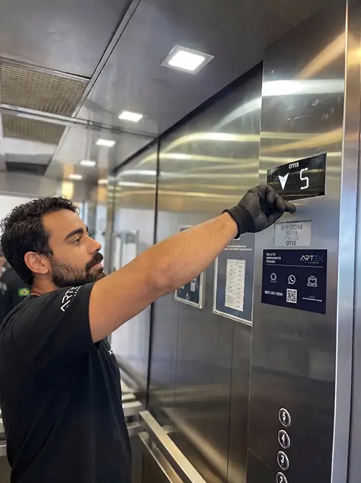
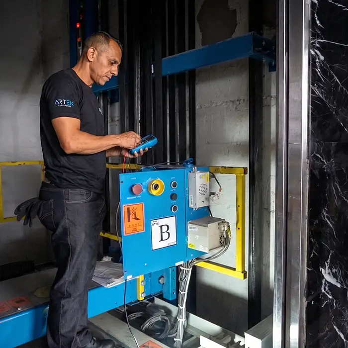
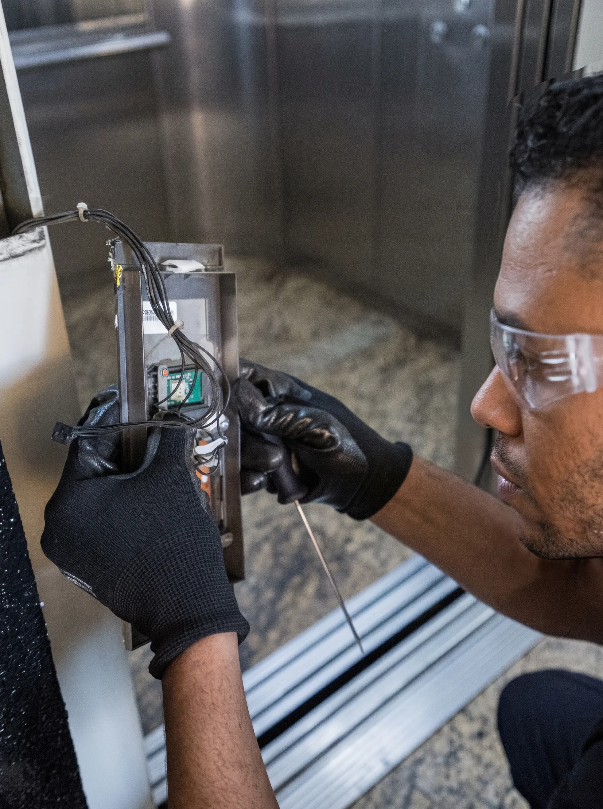
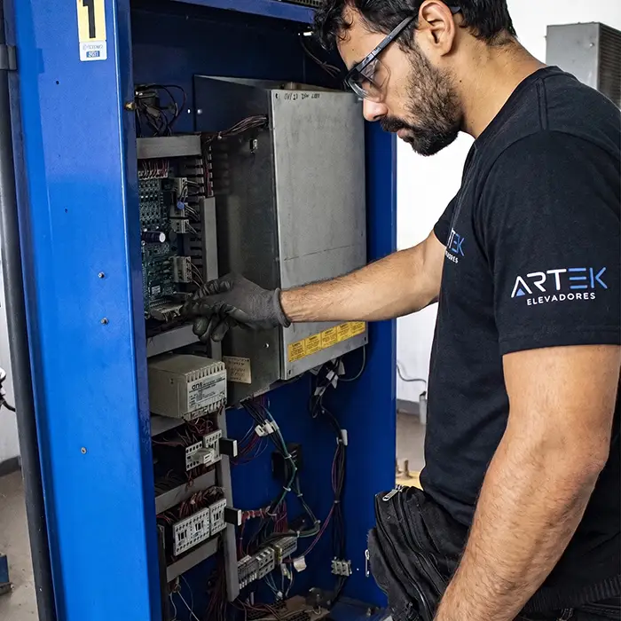

Atendemos condomínios e empresas em todo o Litoral Paulista, unindo rapidez, tecnologia de ponta e uma equipe altamente especializada para garantir o funcionamento seguro do seu equipamento.
solicite um orçamentoTransparência e Previsão: Fornecemos relatórios mensais detalhados sobre os serviços realizados e antecipamos riscos futuros, permitindo decisões mais seguras.
Logística Inteligente: Contamos com uma frota de veículos estrategicamente distribuída, assegurando agilidade no deslocamento e tempos de resposta mais rápidos.
Agilidade e Peças de Reposição: Com um almoxarifado técnico bem estruturado e parcerias sólidas com as principais montadoras, garantimos um atendimento rápido e minimizamos o tempo de máquina parada.




Realizamos manutenção preventiva e corretiva nos principais equipamentos do mercado (Atlas Schindler, Otis, Kone, Thyssenkrupp entre outras).
Com uma equipe técnica altamente capacitada, entregamos eficiência, segurança total e maior durabilidade para o seu elevador, seja qual for a fabricante.
Solicite sua manutenção ➔